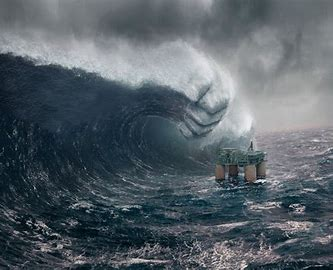
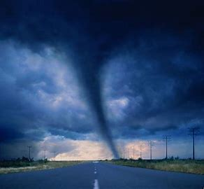
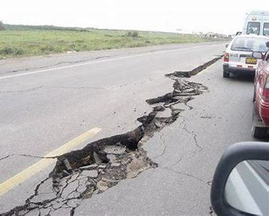

Tsunamis are large waves that are often caused by earthquakes and they can be at least tallet than 30ft. They formed when earthquakes appears and the ground beneath the water move up and dowm.
Click here to learn more

Tornados are a wind that is rotationg wave of wind and can often be dangerous.They are formed whe the wind changes direction at different speed and attitude.
Click here to learn more

Earthquakes are shockwaves that shakes the ground and they are caused when the friction and pressure is released and they can be really dangerous.
Click here to learn more